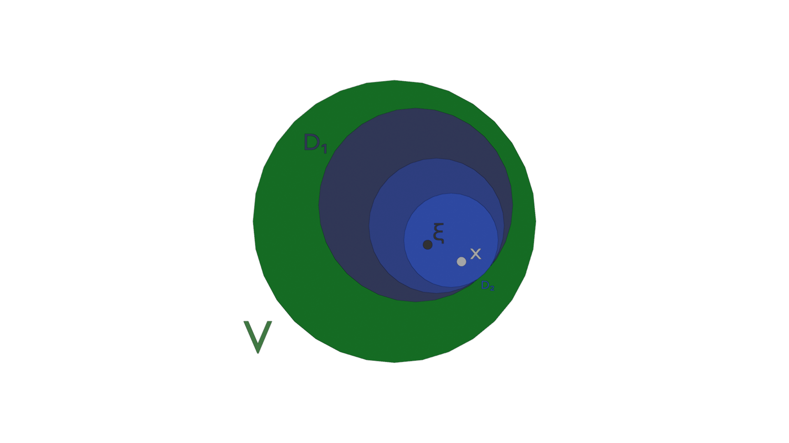

file_data
| file_name | pdf_lab_js_wiki |
| author | ghostnation |
| course | ECE555 |
| date | 07MAY2025 |
1.0
Components of pdf_lab_js
This document provides a visual reference for the CSS utilities of pdf_lab_js. As the project develops, elements will be integrated into the wiki so users may browse through the document for specific structures of interest. It is recommended that user be familiar with the "Inspect Element" tool to directly identify the underlying elements that build up composite structures.
Below is an example of a MathJAX equation rendering within the
$$\frac{d}{dx} \left[ p(x) \frac{dy}{dx} \right] + q(x)y + \lambda w(x) y = 0 $$
Rendering notation in MathJAX is equivalent to working entirely in a LaTeX block math environment, and appropriate considerations must be made in order to feature text and math together. MathJAX boxes do not currently have the ability for reflow, and thus will cause the column width to extend if the content is not formatted so that it renders within the default column width. If desired, elements can be placed outside of the
numberingGrid element. By default, it renders as an inline element, where typset values can be placed directly in a sentence, such as \(\sigma^2\), but, below, we show the block syntax:
$$\frac{d}{dx} \left[ p(x) \frac{dy}{dx} \right] + q(x)y + \lambda w(x) y = 0 $$
Rendering notation in MathJAX is equivalent to working entirely in a LaTeX block math environment, and appropriate considerations must be made in order to feature text and math together. MathJAX boxes do not currently have the ability for reflow, and thus will cause the column width to extend if the content is not formatted so that it renders within the default column width. If desired, elements can be placed outside of the
numberingGrid box which prevents the lines from being numbered. Below, a proof element in displayed outside of the numberingGrid element. Proofs do not line have line numbers and are intended to be separate blocks from the document:
Example Mathematical Proof
\(
\textbf{Theorem 4.2.} ~\text{For any } ~n \in \mathbb{N}, ~\text{64 is a factor of}~ 3^{2n+2} - 8n - 9.
\)
The pdf_lab_js document also incorporates features from prism.js in rendering linted code in a block. Code cells that employ the prism.js functionality are written in the following example. The
<pre> element is accompanied by the class that indicates the color scheme for the language contained within the block, in this case, language-css; line numbers can be features by including the line-numbers class. Prism enables elements to search for data following the "data-src" class path. We may also restyle the prism colored block with pre-wrap rearranging and reducing the font size. Another useful utility is the ability select a range of lines using the data-range field. Please refer to the prism.js website @ https://prismjs.com/ for more information.
The prism.js library can also render filesystem contents, such as the very filsystem structure implemented in pdf_lab_js_wiki
2.0
Function Protocols
The structure of pdf_lab_js is designed to represent website codebases, with primary HTML file, a source module js file (index.js), and a source CSS file (). The functionality of pdf_lab_js is separated into separate script files which define the protocol for a specific task. The script tasks and functions are elucidated below:
2.1
index.js
All function operations are contained within modules, and the modules are import into index.js, which will call specific utilities to properly render the document. All modules are equipped with a
.help() method that enables the user to examine the scope of functions within the document, although 2.2
textReflow.js
The management and arrangement of elements on the DOM is a sophisticated challenge due to the plethora of elements that constitute the document. Currently, the document supports "soft" reflow of numberingGrid elements, and has the ability to slice a numbering grid based upon elements that are admissible or inadmissible to a vertical height constraint, placing the inadmissible contents in the subsequent numberingGrid element, and replacing the entire numbering grid element that violated the height constraint with the sliced container that contains an admissible subset of the elements with respect to the constraint. The constraint itself is defined as the top coordinate (including margins) of the
slashNumber
2.2
textReflow.js
The management and rearrangement of elements on the DOM is a sophisticated challenge due to the plethora of elements that constitute the document. Currently, the document supports "soft" reflow of numberingGrid elements, and has the ability to slice a numbering grid based upon elements that are admissible or inadmissible to a vertical height constraint, placing the inadmissible contents in the subsequent numberingGrid element, and replacing the entire numbering grid element that violated the height constraint with the sliced container that contains an admissible subset of the elements with respect to the constraint blah blah blah blah reflow reflow reflow violation violation violation check check check this this this reflow reflow reflow violation violation violation. Testing a
element.
| Parameter | Description | Default Felsen Value |
|---|---|---|
| plate height | distance between top and bottom plate of the waveguide | 1 m |
| source height | height of transmitted wave within the waveguide (vertical axis) | 0.2 m |
| observer height | height of wave receiver within the waveguide (vertical axis) | 0.5 m |
| first range | lower bound region of the horizontal analysis domain | 5 m |
| last range | upper bound region of the horizontal analysis domain | 6.5 |
| range increments | step size of field calculation when traversing the horizontal axis. Increased performance with reduced step size | 0.01 |
| sector minimum | sector of angular spectrum to fix for lower order modes bound (eigenrays are automatically added within the mode bandwidth) | 2 |
| sector maximum | sector of angular spectrum to fix for higher order modes bound (eigenrays are automatically added within the mode bandwidth) | 4 |
| frequency | initial frequency of the wave | 2400 MHz |
HYBRID-GUI parameters
directory for easy management of the figures. Several figure examples are rendered below for inspection:
Conflation of \(\xi\) to x as V \(\rightarrow\) 0

This is a caption element. We attempt to see if it can reflow because if it cannot then we are in a massive amount of trouble anyway here is the checkbox. Please let us know if this is reflowing or not. Thank you.
The pdf_lab_js document also incorporates features from prism.js in rendering linted code in a block. Code cells that employ the prism.js functionality are written in the following example. The
<pre> element is accompanied by the class that indicates the color scheme for the language contained within the block, in this case, language-css; line numbers can be features by including the line-numbers class. Prism enables elements to search for data following the "data-src" class path. We may also restyle the prism colored block with pre-wrap rearranging and reducing the font size. Please refer to the prism.js website @ https://prismjs.com/
The pdf_lab_js document also incorporates features from prism.js in rendering linted code in a block. Code cells that employ the prism.js functionality are written in the following example. The
<pre> element is accompanied by the class that indicates the color scheme for the language contained within the block, in this case, language-css; line numbers can be features by including the line-numbers class. Prism enables elements to search for data following the "data-src" class path. We may also restyle the prism colored block with pre-wrap rearranging and reducing the font size. Please refer to the prism.js website @ https://prismjs.com/
Appendix
MATLAB module for the calculation of eigenrays and their field contributions for given source/receiver locations
/assets/code/module_2.js